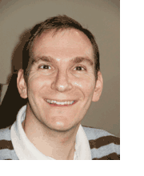

|
Senior Software Engineer

Kibi Hofmann
Kibi joined Degel in 2002. He has since scored some very significant client
wins, including creating a platform for device-independent J2ME
programming and moving a client's networked gaming library from J2ME to
C++ on Symbian devices. He also served as the lead programmer
on iambic's popular Agendus contact manager for Symbian OS. More recently he
developed the Natural Recorder call recording utility on behalf of Natural Widgets.
His prior experience:
-
Held the position of Senior Software Engineer at Optical Metrology where he was
responsible for maintaining and developing software to provide a PC
interface to laser measuring devices. His work included both GUI
development and real-time DSP programming.
-
Was a member of the 2AM Technical Development team. He helped provide
solutions to MFC and GUI problems in 2AM's Creation software, and was
responsible for extensive research into undocumented Microsoft
functionality.
-
Worked as a Windows/MFC "guru" for NDS
Technologies Israel. Later he moved to NDS' Interactive TV group
and coordinated the team developing the first interactive TV
application on-air.
Kibi graduated UMIST with a
Bachelor's degree in
Materials Science in 1992 and earned a Master's degree in
computer Science from The University of Manchester in
1993. His Master's research focused on algorithmic methods.
|